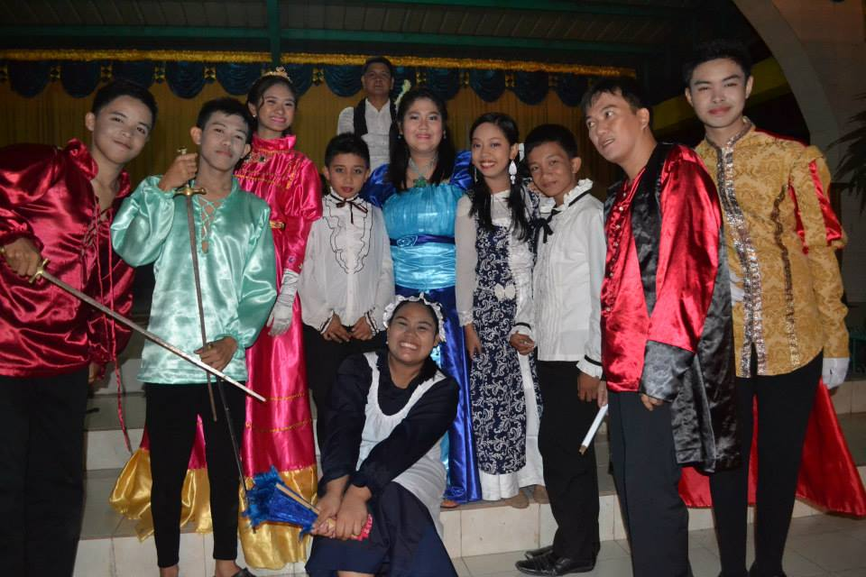
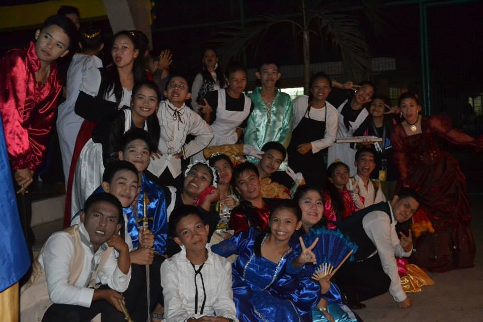
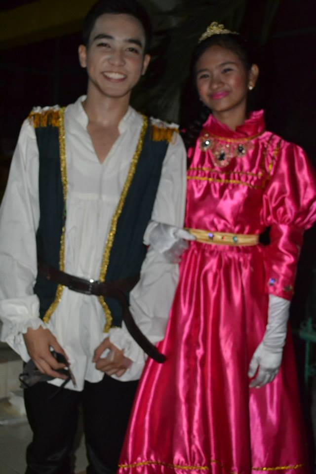

 This is my DENHS Repertory family. I became a member during my last year in high school. This picture was taken during one of plays entitled Romeo at Julieta which is a tagalized version of William Shakespeare's Romeo & Juliet. My character in the play is the princess. I did not get the part of the main role because it was already taken when I auditioned. I also almost didn't make it to be part of the cast because all the characters have been filled already but the guy that will play the role of the prince has backed out so our club adviser decided that instead of a prince, it will be a princess and that's when I got the role of being the princess. This play was held for four days from October 27-30, 2014. That guy who's the only one not looking at the camera is our club adviser, Sir Joy.
 This is the incomplete cast of the play, some are still not in the picture. Five of our teachers are also part of the play. The one I'm closest to is Ma'am Rose (lady wearing red gown at the right side). She's the one doing my make-up and hairstyle during the play.
I love this family because apart from acting being my passion, all the members and casts are very warm people. Even though I auditioned late, I didn't feel out of place. In fact, they were very considerate when I still forget my lines even if they all have memorized their lines already.
My role as the princess sort of became my nickname to them because they still call me Prinsesa even when we're not acting.
 This guy with me played the part of Romeo in the play. His name is Edmon, many girls already have a crush on him before and it multiplied during the play because apart from being a good actor, he has this charisma that many girls just can't enough of. He's the one who recruited me to audition in their club, maybe because he noticed that I like acting. He's also my classmate during that time. I can still remember the time when he approached me and told me to audition.
He sort of became my best friend during the preparation for the play and during the play itself. They were times that he will bring me food during practices, he's the one who will remind me that there will be a practice, sometimes he will also accompany me to buy things I need for the play and many more. I was very well taken care of during that time, I must say.